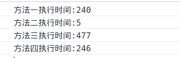
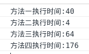
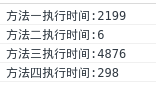

- 前端和计算机相关知识
- CSS
- CSS3
- css居中的方式
- 请写一个简单的幻灯效果页面
- 什么是无样式内容闪烁?如何避免?
- display:none和visibility:hidden的区别
- 解释浮动和工作原理
- 清除浮动
- 解释CSS Sprits,以及你要如何使用?
- 你最喜欢的图片替换方法是什么?你将如何使用?
- 讨论CSS hacks, 条件引用或其他
- 如何为有功能限制的浏览器提供网页
- 在书写高效CSS时会有哪些问题需要考虑?
- 如何优化网页的打印样式?
- 描述下你曾经使用过的CSS 预处理的优缺点
- 如果设计中使用了非标准的字体, 你将如何实现?
- block, inline和inline-block的区别
- 有哪些隐藏内容的方法(同时还要保证屏幕阅读器可用)
- CSS选择器级别
- alt和title的区别
- 知道bfc吗?
- 行内元素，块级元素，空元素各有哪些？
- html
- jquery问题
-
一些编程题
- 匿名函数变量
- this指向
- 定时
-
js算法题
一、前端编程
1. 你能描述一下渐进增强和优雅降级之间的不同吗?
答:
- 定义:
- 优雅降级（graceful degradation): 一开始就构建站点的完整功能，然后针对浏览器测试和修复
- 渐进增强（progressive enhancement): 一开始只构建站点的最少特性，然后不断针对各浏览器追加功能。
- 都关注于同一网站在不同设备里不同浏览器下的表现程度
- 区别:
- “优雅降级”观点认为应该针对那些最高级、最完善的浏览器来设计网站. 而将那些被认为“过时”或有功能缺失的浏览器下的测试工作安排在开发周期的最后阶段，并把测试对象限定为主流浏览器（如 IE、Mozilla 等）的前一个版本。
- “渐进增强”观点则认为应关注于内容本身。请注意其中的差别：我甚至连“浏览器”三个字都没提。
- 理解:
- "优雅降级"就是首先完整地实现整个网站,包括其中的功能和效果. 然后再为那些无法支持所有功能的浏览器增加候选方案, 使之在旧式浏览器上以某种形式降级体验却不至于完全失效.
- "渐进增强"则是从浏览器支持的基本功能开始, 首先为所有设备准备好清晰且语义化的html及完整内容, 然后再以无侵入的方法向页面增加无害于基础浏览器的额外样式和功能. 当浏览器升级时, 它们会自动呈现并发挥作用.
2. 浏览器兼容问题:
- 问题1 不同浏览器的标签默认的外补丁和内补丁不同.
- 即随便写几个标签, 在不加样式控制的情况下, 各自的margin和padding差异较大.
- 解决方法: CCS里: *{margin:0; padding:0}
- 问题2 块属性标签float后，又有横行的margin情况下，在IE6显示margin比设置的大
- 会使得ie6后面的一块被顶到下一行.
- 解决方案: 在float的标签样式中加入 display: inline; 将其转化为行内属性
- 问题3 设置较小高度标签（一般小于10px），在IE6，IE7，遨游中高度超出自己设置高度
- IE6、7和遨游里这个标签的高度不受控制，超出自己设置的高度
- 解决方案: 给超出高度的标签设置overflow:hidden;或者设置行高line-height 小于你设置的高度
- 原因: ie8之前的浏览器都会给标签一个最小默认的行高的高度. 即使标签是空的,这个标签的高度还是会达到默认的行高.
- 问题4 行内属性标签，设置display:block后采用float布局，又有横行的margin的情况，IE6间距bug
- 解决: 在display:block;后面加入display:inline;display:table;
- 问题5 图片默认有间距
- 几个img标签放在一起的时候，有些浏览器会有默认的间距，加了问题一中提到的通配符也不起作用。
- 解决: 使用float属性为img布局
- 问题6 标签最低高度设置min-height不兼容
- 因为min-height本身就是一个不兼容的CSS属性，所以设置min-height时不能很好的被各个浏览器兼容
- 如果我们要设置一个标签的最小高度200px，需要进行的设置为：{min-height:200px; height:auto !important; height:200px; overflow:visible;}
- 问题7 透明度的兼容CSS设置
- 使用hacker
- IE6认识的hacker是下划线_和*
- IE7,遨游认识的hacker是*
- 使用hacker
- 问题8 IE ol的序号全为1, 不递增
- 解决: li设置样式{display: list-item}
问题9
ie6,7不支持display:inline-block
- 解决方法: 设置inline并触法haslayout
- display:inline-block; *display:inline; *zoom:1
参考自: 常见浏览器兼容性问题与解决方案
3. 如何对网站的文件和资源进行优化?
答:
- 文件合并（同上题“假若你有5个不同的 CSS 文件, 加载进页面的最好方式是？”）
- 减少调用其他页面、文件的数量。一般我们为了让页面生动活泼会大量使用background来加载背景图，而每个 background的图像都会产生1次HTTP请求，要改善这个状况，可以采用css的1个有用的background-position属 性来加载背景图，我们将需要频繁加载的多个图片合成为1个单独的图片，需要加载时可以采用：background:url(....) no-repeat x-offset y-offset;的形式加载即可将这部分图片加载的HTTP请求缩减为1个。
- 每个http请求都会产生一次从你的浏览器到服务器端网络往返过程，并且导致推迟到达服务器端和返回浏览器端的时间，我们称之为延迟。
- 文件最小化/文件压缩
- 即将需要传输的内容压缩后传输到客户端再解压，这样在网络上传输的 数据量就会大幅减小。通常在服务器上的Apache、Nginx可以直接开启这个设置，也可以从代码角度直接设置传输文件头，增加gzip的设置，也可以 从 负载均衡设备直接设置。不过需要留意的是，这个设置会略微增加服务器的负担。建议服务器性能不是很好的网站，要慎重考虑。
- js和css文件在百度上搜一个压缩网站就能压缩，但是在实际开发的项目中，使用gulp、webpack等工具可以打包出合并压缩后的文件，小图片可以在打包时转换成base64方式引入，大图片可以被压缩，html文件也是可以被压缩的
- 使用 CDN 托管
- CDN的全称是Content Delivery Network，即内容分发网络。其基本思路是尽可能避开互联网上有可能影响数据传输速度和稳定性的瓶颈和环节，使内容传输的更快、更稳定。其目的是使用户可就近取得所需内容，解决 Internet网络拥挤的状况，提高用户访问网站的响应速度。
- 缓存的使用
- Ajax调用都采用缓存调用方式，一般采用附加特征参数方式实现，注意其中的<script src=”xxx.js?{VERHASH}”，{VERHASH}就是特征参数，这个参数不变化就使用缓存文件，如果发生变化则重新下载新文件或更新信息。
- css文件放置在head，js放置在文档尾
- 在服务器端配置control-cache last-modify-date
-
在服务器配置Entity-Tag if-none-match
- 用更少的时间下载更多的文件，提高网站加载速度，提高用户体验，可以使用以下方法：
- 1.css sprites----将小图片合并为一张大图片，使用background-position等css属性取得图片位置
- 2.将资源放在多个域名下-----打开控制台，可以看到很多网站都是这么做的~
- 3.图片延迟加载-----很多电商网站、新闻网站，尤其是用到瀑布流展示图片的时候，很多都这么做了，这个技术已经很普遍~
- 书写代码的时候要注意优化：
- 1.css
- 将可以合并的样式合并起来，比如margin-top、margin-bottom等。
- 给img图片设置宽高，因为浏览器渲染元素的时候没有找到这两个参数，需要一边下载图片一边计算大小，如果图片很多，浏览器需要不断地调整页面。这不但影响速度，也影响浏览体验。当浏览器知道了高度和宽度参数后，即使图片暂时无法显示，页面上也会腾出图片的空位，然后继续加载后面的内容。从而加载时间快了，浏览体验也更好了。
- 2.js
- 少改变DOM元素，少触发reflow，可以复用的代码提出来写成公共的等等……
- 3.img
- 优化图片，不失真的情况下尽量减少图片大小，使用iconfont等
- 1.css
4. 怎么学习前端? 怎么接触web新知识?
5. 关于前后端分离:
- 前端：负责View和Controller层。
- 后端：只负责Model层，业务处理/数据等。
6. 关于浏览器内核(渲染引擎)
- 先说一下浏览器的结构：
- ①、用户界面（UI） - 包括菜单栏、工具栏、地址栏、后退/前进按钮、书签目录等，也就是能看到的除了显示页面的主窗口之外的部分；
- ②、浏览器引擎（Rendering engine） - 也被称为浏览器内核、渲染引擎，主要负责取得页面内容、整理信息（应用CSS）、计算页面的显示方式，然后会输出到显示器或者打印机；
- ③、JS解释器 - 也可以称为JS内核，主要负责处理javascript脚本程序，一般都会附带在浏览器之中，例如chrome的V8引擎；
- ④、网络部分 - 主要用于网络调用，例如：HTTP请求，其接口与平台无关，并为所有的平台提供底层实现；
- ⑤、UI后端 - 用于绘制基本的窗口部件，比如组合框和窗口等。
- ⑥、数据存储 - 保存类似于cookie、storage等数据部分，HTML5新增了web database技术，一种完整的轻量级客户端存储技术。
- 注：IE只为每个浏览器窗口启用单独的进程，而chrome浏览器却为每个tab页面单独启用进程，也就是每个tab都有独立的渲染引擎实例。
- 现在的主要浏览器：
- IE、Firefox、Safari、Chrome、Opera。
- 它们的浏览器内核（渲染引擎）：
- IE--Trident、
- FF(Mozilla)--Gecko、
- Safari--Webkit、
- Chrome--Blink（WebKit的分支）、
- Opera--原为Presto，现为Blink。
- 因此在开发中，兼容IE、FF、Opera（Presto引擎是逐步放弃的）、Chrome和Safari中的一种即可，Safari、Chrome的引擎是相似的。
7. 浏览器加载文件(repaint/reflow)
- 文件加载顺序
- 浏览器加载页面上引用的CSS、JS文件、图片时，是按顺序从上到下加载的，每个浏览器可以同时下载文件的个数不同，因此经常有网站将静态文件放在不同的域名下，这样可以加快网站打开的速度。
- reflow
- 在加载JS文件时，浏览器会阻止页面的渲染，因此将js放在页面底部比较好。
- 因为如果JS文件中有修改DOM的地方，浏览器会倒回去把已经渲染过的元素重新渲染一遍，这个回退的过程叫reflow。
- CSS文件虽然不影响js文件的加载，但是却影响js文件的执行，即使js文件内只有一行代码，也会造成阻塞。因为可能会有var width = $('#id').width()这样的语句，这意味着，js代码执行前，浏览器必须保证css文件已下载和解析完成。
- 办法：当js文件不需要依赖css文件时，可以将js文件放在头部css的前面。
- 常见的能引起reflow的行为：
- 1.改变窗囗大小
- 2.改变文字大小
- 3.添加/删除样式表
- 4.脚本操作DOM
- 5.设置style属性
- 等等……
- reflow是不可避免的，只能尽量减小，常用的方法有：
- 1.尽量不用行内样式style属性，操作元素样式的时候用添加去掉class类的方式
- 2.给元素加动画的时候，可以把该元素的定位设置成absolute或者fixed，这样不会影响其他元素
- repaint
- 另外，有个和reflow相似的术语，叫做repaint（重绘），在元素改变样式的时候触发，这个比reflow造成的影响要小，所以能触发repaint解决的时候就不要触发reflow……
8. 为什么利用多个域名来请求网络资源会更有效？
- 动静分离需求，使用不同的服务器处理请求。处理动态内容的只处理动态内容，不处理别的，提高效率。CDN缓存更方便
- 突破浏览器并发限制：相关问题： 浏览器同一时间可以从一个域名下载多少资源？（即： 浏览器并发请求数）
- 也就是说：同一时间针对同一域名下的请求有一定数量限制。超过限制数目的请求会被阻止。不同浏览器这个限制的数目不一样。
- Cookieless, 节省带宽，尤其是上行带宽 一般比下行要慢。
用户的每次访问，都会带上自己的cookie ，挺大的。假如twitter 的图片放在主站域名下，那么用户每次访问图片时，request header 里就会带有自己的cookie ，header 里的cookie 还不能压缩，而图片是不需要知道用户的cookie 的，所以这部分带宽就白白浪费了。
- 节约主域名的连接数，从而提高客户端网络带宽的利用率，优化页面响应。因为老的浏览器（IE6是典型），针对同一个域名只允许同时保持两个HTTP连接。将图片等资源请求分配到其他域名上，避免了大图片之类的并不一定重要的内容阻塞住主域名上其他后续资源的连接（比如ajax请求）。
- 避免不必要的安全问题( 上传js窃取主站cookie之类的)
9. 进程和线程的区别
- 一个程序至少有一个进程,一个进程至少有一个线程.
- 线程的划分尺度小于进程，使得多线程程序的并发性高。
- 线程是独立调度的基本单位, 进程是拥有资源的基本单位
- 另外，进程在执行过程中拥有独立的内存单元，而多个线程共享内存，从而极大地提高了程序的运行效率。
- 线程在执行过程中与进程还是有区别的。
- 每个独立的线程有一个程序运行的入口、顺序执行序列和程序的出口。
- 但是线程不能够独立执行，必须依存在应用程序中，由应用程序提供多个线程执行控制。
- 从逻辑角度来看，
- 多线程的意义在于一个应用程序中，有多个执行部分可以同时执行。但操作系统并没有将多个线程看做多个独立的应用，来实现进程的调度和管理以及资源分配。这就是进程和线程的重要区别。
10. 前端开发的优化问题
- 前端开发的优化问题：
- 如何控制网页在网络传输过程中的数据量
11. Flash、Ajax各自的优缺点，在使用中如何取舍?
- Ajax的优势
(1) 可搜索型
(2) 开放性
(3) 费用
(4) 易用性
(5) 易于开发
- Flash的优势
(1) 多媒体处理
(2) 兼容性
(3) 矢量图形 比SVG，Canvas优势大很多
(4) 客户端资源调度，比如麦克风，摄像头
参考：前端开发的优化问题
二、CSS
1. CSS3
CSS3新特性：
- 新增各种CSS选择器 (: not(.input): 所有class不是“input”的节点）
- 圆角border-radiuis
- 多列布局：multi-column layout
- 阴影和反射： multi-column layout
- 文字特效：text-shadow
- 线性渐变： gradient
- 旋转：transform
- 缩放，定位，倾斜，动画，多背景：transform: \scale(0.85,0.90) \ translate(0px, -30px) \ skew(-9deg, 0deg) \ Animation
参考：CSS3中的一些属性
2. css居中的方式
3. 请写一个简单的幻灯效果页面
4. 什么是无样式内容闪烁?如何避免?
答:
- what?
- 如果使用import方法对CSS进行导入,会导致某些页面在Windows 下的Internet Explorer出现一些奇怪的现象:以无样式显示页面内容的瞬间闪烁,这种现象称之为文档样式短暂失效(Flash of Unstyled Content),简称为FOUC。
- why?
- 使用import导入样式表
- 将样式表放在页面底部
- 有几个样式表,放在页面不同位置
- 原因即:当样式表晚于结构性html加载，当加载到此样式表时，页面将停止之前的渲染。此样式表被下载和解析后，将重新渲染页面，也就出现了短暂的花屏现象。
- how?
- 使用LINK标签将样式表放在文档HEAD中。
5. display:none 和 visibility: hidden的区别
- display:none 隐藏对应的元素，在文档布局中不再给它分配空间，它各边的元素会合拢，就当他从来不存在。
- visibility:hidden 隐藏对应的元素，但是在文档布局中仍保留原来的空间。
6. 解释浮动和工作原理
答:
- 浮动可以理解为让某个div元素脱离标准流，漂浮在标准流之上，和标准流不是一个层次。
- 假如某个div元素A是浮动的，如果A元素上一个元素也是浮动的，那么A元素会跟随在上一个元素的后边(如果一行放不下这两个元素，那么A元素会被挤到下一行)；如果A元素上一个元素是标准流中的元素，那么A的相对垂直位置不会改变，也就是说A的顶部总是和上一个元素的底部对齐。
- 清除浮动是为了清除使用浮动元素产生的影响。浮动的元素，高度会塌陷，而高度的塌陷使我们页面后面的布局不能正常显示。
-
- 关于清除浮动:清除浮动可以理解为打破横向排列。 clear: none | left | right | both
- 对于CSS的清除浮动(clear)，一定要牢记：这个规则只能影响使用清除的元素本身，不能影响其他元素。
参考自: 经验分享：CSS浮动(float,clear)通俗讲解
7. 清除浮动
答:
- 在浮动元素后面添加空标签 clear:both
- 给父标签使用overflow: hidden/auto;zoom:1
- 父级div定义, 使用伪类:after和zoom
1 2 | .clearfloat:after{display:block;clear:both;content:"";visibility:hidden;height:0} .clearfloat{zoom:1} |
zoom:1的作用： 触发IE下的hasLayout。zoom是IE浏览器专有属性，可以设置或检索对象的缩放比例。
当设置了zoom的值之后，所设置的元素就会扩大或缩小，高度宽度就会重新计算了，这里一旦改变zoom值时其实也会发生重新渲染，运用这个原理，也就解决了ie下子元素浮动时候父元素不随着自动扩大的问题。
8. 解释CSS Sprites, 以及你要如何使用?
答: CSS Sprites其实就是把网页中一些背景图片整合到一张图片文件中，再利用CSS的“background-image”，“background- repeat”，“background-position”的组合进行背景定位，background-position可以用数字能精确的定位出背景图片的位置。
9. 你最喜欢的图片替换方法是什么，你如何选择使用?
答:
1) <h1><img src="image.gif" alt="Image Replacement"></h1>
2) 移开文字:
1 2 3 4 | <h1><span>Image Replacement</span></h1> h1{ background:url(hello_world.gif) no-repeat; width: 150px; height: 35px; } span { display: none; } |
注意问题:①结构性需要增加一个标签包裹文本 ②需要把背景图设置在外标签上,并把文本外标签隐藏.
缺点: 不利于阅览器浏览网页
3) text-indent属性，并且给其设置一个较大的负值，x达到隐藏文本的效果
1 2 3 4 5 6 7 8 | <h1 class="technique-three">w3cplus</h1>.technique-three { width: 329px; height: 79px; background: url(images/w3cplus-logo.png); text-indent: -9999px;} |
4) 我们此处使用一个透明的gif图片，通过在img标签中的“alt”属性来弥补display:none。这样阅读器之类的就能阅读到所替换的文本是什么

<h1 class="technique-five">
<img src="images/blank.gif" alt="w3cplus" /<
<span>w3cplus</span>
</h1>
.technique-five {
width: 329px;
height: 79px;
background: url(images/w3cplus-logo.png);
}
.technique-five span {
display: none;
}5) 使用零高度来隐藏文本，但为了显示背景图片，需要设置一个与替换图片一样的大小的padding值
1 2 3 4 5 6 7 8 9 10 | <h1 class="technique-six">w3cplus</h1>.technique-six { width: 329px; padding: 79px 0 0 0; height: 0px; font-size: 0; background: url(images/w3cplus-logo.png); overflow: hidden;} |
6) 通过把span的大小都设置为“0”，来达到隐藏文本效果，这样阅读器就能完全阅读到，而且又达到了图片替换文本的效果
1 2 3 4 5 6 7 8 9 10 11 12 13 14 15 16 | <h1 class="technique-seven"> <span>w3cplus</span></h1>.technique-seven { width: 329px; height: 79px; background: url(images/w3cplus-logo.png);}.technique-seven span { display: block; width: 0; height: 0; font-size: 0; overflow: hidden;} |
7) 利用一个空白的span标签来放置背景图片，并对其进行绝对定位，使用覆盖文本，达到隐藏替换文本的效果。
1 2 3 4 5 6 7 8 9 10 11 12 13 14 15 | <h1 class="technique-eight"> <span></span>w3cplus</h1>.technique-eight { width: 329px; height: 79px; position: relative;}.technique-eight span { background: url(images/w3cplus-logo.png); position: absolute; width: 100%; height: 100%;} |
8) 设置字体为微小值，但这里需要注意一点不能忘了设置字体色和替换图片色一样，不然会有一个小点显示出来
1 2 3 4 5 6 7 8 9 | <h1 class="technique-nine">w3cplus</h1>.technique-nine { width: 329px; height: 79px; background: url(images/w3cplus-logo.png); font-size: 1px; color: white;} |
9) 使用css的clip属性来实现图片替换文本的效果
1 2 3 4 5 6 7 8 9 10 11 12 13 14 15 16 17 18 19 | <h1 class="technique-ten"><span>w3cplus</span></h1>.technique-ten { width: 329px; height: 79px; background: url(images/w3cplus-logo.png);} .technique-ten span { border: 0 !important; clip: rect(1px 1px 1px 1px); clip: rect(1px,1px,1px,1px); height: 1px !important; margin: -1px; overflow: hidden; padding: 0 !important; position: absolute !important; width: 1px;} |
参考自: 十种图片替换文本CSS方法
10. 讨论CSS hacks, 条件引用或者其他
- hacks
- _width针对于ie6。*width,+width针对于ie6,7。
- color: red\9;/*IE8以及以下版本浏览器*/（但是测试可以兼容到ie10。
- *+html与*html是IE特有的标签, firefox暂不支持.而*+html又为IE7特有标签（但是测试*html兼容ie6-10。*+兼容ie7-10）。
- !important 在IE中会被忽视，ie6,7,8不识别，ie9+（包括ie9）是识别的。
- 条件引用
-
12345678910
<!--[if !IE]><!-->除IE外都可识别<!--<![endif]--><!--[if IE]> 所有的IE可识别 <![endif]--><!--[if IE 6]> 仅IE6可识别 <![endif]--><!--[if lt IE 6]> IE6以及IE6以下版本可识别 <![endif]--><!--[if gte IE 6]> IE6以及IE6以上版本可识别 <![endif]--><!--[if IE 7]> 仅IE7可识别 <![endif]--><!--[if lt IE 7]> IE7以及IE7以下版本可识别 <![endif]--><!--[if gte IE 7]> IE7以及IE7以上版本可识别 <![endif]--><!--[if IE 8]> 仅IE8可识别 <![endif]--><!--[if IE 9]> 仅IE9可识别 <![endif]-->
-
11. 如何为有功能限制的浏览器提供网页?
答: 功能限制的浏览器, 比如低版本IE, 手机浏览器, 等会在很多功能上不符合Web标准, 而应对方式主要有:
- 只提供符合Web标准的页面
- 提供另一个符合那些浏览器标准的页面
- 兼容: 两种思路:
- 渐进增强: 提供一个可用的原型，后来再为高级浏览器提供优化
- 优雅降级: 据高级浏览器提供一个版本，然后有功能限制的浏览器只需要一个刚好能用的版本
- 相关技术:
- Media Query
- CSS hack
- 条件判断<! --[if !IE]><!-->除IE外都可识别<!--<![endif]-->
参考自: 如何为有功能限制的浏览器提供网页
12. 在书写高效 CSS 时会有哪些问题需要考虑?
答:
1）reset。参照下题“描述下 “reset” CSS 文件的作用和使用它的好处”的答案。
2）规范命名。尤其对于没有语义化的html标签，例如div，所赋予的class值要特别注意。
2）抽取可重用的部件，注意层叠样式表的“优先级”。
13. 如何优化网页的打印样式?
针对打印机的样式: @media print{...}
参考:如何优化网页的打印样式？ 移动端H5知识普及 - CSS3媒体查询
14. 描述下你曾经使用过的 CSS 预处理的优缺点
答: 优点:
- 结构清晰, 便于扩展
- 可以方便屏幕浏览器私有语法差异
- 可以轻松实现多重继承
- 完全兼容css代码
参考: 再谈 CSS 预处理器
15. 如果设计中使用了非标准的字体，你该如何去实现？
- 图片替代
- web : fonts在线字库
- @font-face
16. 解释下浏览器是如何判断元素是否匹配某个 CSS 选择器？
作者：张靖超链接：https://www.zhihu.com/question/24959507/answer/29672263来源：知乎著作权归作者所有，转载请联系作者获得授权。
浏览器先产生一个元素集合，这个集合往往由最后一个部分的索引产生（如果没有索引就是所有元素的集合）。然后向上匹配，如果不符合上一个部分，就把元素从集合中删除，直到真个选择器都匹配完，还在集合中的元素就匹配这个选择器了。
举个例子，有选择器：
body.ready #wrapper > .lol233至此这个选择器匹配结束，所有还在集合中的元素满足。
大体就是这样，不过浏览器还会有一些奇怪的优化。
为什么从后往前匹配因为效率和文档流的解析方向。效率不必说，找元素的父亲和之前的兄弟比遍历所哟儿子快而且方便。关于文档流的解析方向，是因为现在的 CSS，一个元素只要确定了这个元素在文档流之前出现过的所有元素，就能确定他的匹配情况。应用在即使 html 没有载入完成，浏览器也能根据已经载入的这一部分信息完全确定出现过的元素的属性。
为什么是用集合主要也还是效率。基于 CSS Rule 数量远远小于元素数量的假设和索引的运用，遍历每一条 CSS Rule 通过集合筛选，比遍历每一个元素再遍历每一条 Rule 匹配要快得多。
17. 解释一下你对盒模型的理解，以及如何在 CSS 中告诉浏览器使用不同的盒模型来渲染你的布局。
答:
盒模型：文档中的每个元素被描绘为矩形盒子，渲染引擎的目的就是判定大小，属性——比如它的颜色、背景、边框方面——及这些盒子的位置。
在CSS中，这些矩形盒子用标准盒模型来描述。这个模型描述了一个元素所占用的空间。每一个盒子有四条边界：外边距边界margin edge，边框边界border edge，内边距边界padding edge和内容边界content edge。
内容区域是真正包含元素内容的区域，位于内容边界的内部，它的大小为内容宽度或content-box宽及内容高度或content-box高。如果box-sizing为默认值，width、min-width、max-width、height、min-height和max-height控制内容大小。
内边距区域padding area用内容可能的边框之间的空白区域扩展内容区域。通常有背景——颜色或图片（不透明图片盖住背景颜色）。
边框区域扩展了内边距区域。它位于边框边界内部，大小为border-box宽和border-box高。
外边距区域margin area用空白区域扩展边框区域，以分开相邻的元素。它的大小为margin-box的高宽。
在外边距合并的情况下，由于盒之间共享外边距，外边距不容易弄清楚。
对于非替换的行内元素来说，尽管内容周围存在内边距与边框，但其占用空间（行高）由line-height属性决定。
盒子模型分为两类：W3C标准盒子模型和IE盒子模型 （微软确实不喜欢服从他家的标准）
这两者的关键差别就在于：
-
- W3C盒子模型——属性高（height）和属性宽（width）这两个值不包含 填充（padding）和边框（border ）
- IE盒子模型——属性高（height）和属性宽（width）这两个值包含 填充（padding）和边框（border）
我们在编写页面代码的时候应该尽量使用标准的W3C盒子模型（需要在页面中声明DOCTYPE类型）。
各浏览器盒模型的组成结构是一致的，区别只是在"怪异模式"下宽度和高度的计算方式，而“标准模式”下则没有区别。组成结构以宽度为例：总宽度=marginLeft+borderLeft+paddingLeft+contentWidth+paddingRight+borderRight+marginRight（W3C标准盒子模型）。页面在“怪异模式”下，css中为元素的width和height设置的值在标准浏览器和ie系列(ie9除外)里的代表的含义是不同的（IE盒子模型）。
因而解决兼容型为题最简洁和值得推荐的方式是：下述的第一条。
- 将页面设为“标准模式”。添加对应的dtd标识
- 使用hack或者在外面套上一层wrapper
参考: 解释一下你对盒模型的理解，以及如何在 CSS 中告诉浏览器使用不同的盒模型来渲染你的布局。
18. 伪类的用法：
19. 描述下"reset"css文件的作用和使用它的好处
reset.css能够重置浏览器的默认属性。不同的浏览器具有不同的样式，重置能够使其统一。比如说ie浏览器和FF浏览器下button显示不同，通过reset能够统一样式，显示相同的效果。但是很多reset是没必要的，多写了会增加浏览器在渲染页面的负担。
比如说，
1）我们不应该对行内元素设置无效的属性，对span设置width和height，margin都不会生效的。
2）对于absolute和fixed定位的固定尺寸（设置了width和height属性），如果设置了top和left属性，那么bottom和right，margin和float就没有作用。
3）后面设置的属性将会覆盖前面重复设置的属性。
- 期待能够指出它的负面影响，或者提到它的一个更好的替换者"normalize" normalize.css是一个可以定制的css文件，它让不同的浏览器在渲染元素时形式更统一。
20. 请解释一下 * { box-sizing: border-box; } 的作用, 并且说明使用它有什么好处？
说到 IE 的 bug，在 IE6以前的版本中，IE对盒模型的解析出现一些问题，跟其它浏览器不同，将 border 与 padding 都包含在 width 之内。而另外一些浏览器则与它相反，是不包括border和padding的。对于IE浏览器，当我们设置 box-sizing: content-box; 时，浏览器对盒模型的解释遵从我们之前认识到的 W3C 标准，当它定义width和height时，它的宽度不包括border和padding；对于非IE浏览器，当我们设置box-sizing: border-box; 时，浏览器对盒模型的解释与 IE6之前的版本相同，当它定义width和height时，border和padding则是被包含在宽高之内的。内容的宽和高可以通过定义的“width”和 “height”减去相应方向的“padding”和“border”的宽度得到。内容的宽和高必须保证不能为负，必要时将自动增大该元素border box的尺寸以使其内容的宽或高最小为0。
使用 * { box-sizing: border-box; }能够统一IE和非IE浏览器之间的差异。
21. block, inline和inline-block的区别
答:
- 起新行
- block元素会独占一行, 多个block元素会各自新起一行. 默认情况下, block元素宽度自动填满其父元素宽度
- inline元素不会独占一行, 多个相邻的行内元素会排列在同一行里, 直到一行排列不下, 才会新换一行, 其宽度随元素的内容而变化
- 设置宽高
- block元素可以设置width, height属性. 块级元素即使设置了宽度, 仍然独占一行
- inline元素设置width, height无效
- 内外边距
- block元素可以设置margin和padding属性
- inline元素的margin和padding属性,水平方向的padding-left, padding-right, margin-left, margin-right都会产生边距效果. 但是数值方向的 margin/padding-top/bottom不会产生边距效果
- 包含
- block可以包含inline和block元素,而inline元只能包含inline元素
- 而display: inline-block, 则是将对象呈现为inline对象, 但是对象的内容作为block对象呈现. 之后的内联对象会被排列到一行内. 比如我们可以给一个link(a元素)inline-block的属性, 使其既有block的高宽特性又有inline的同行特性
22. css动画和js动画的优缺点
CSS3的动画
- 优点：
- 1.在性能上会稍微好一些，浏览器会对CSS3的动画做一些优化（比如专门新建一个图层用来跑动画）
- 2.代码相对简单
- 缺点：
- 1.在动画控制上不够灵活
- 2.兼容性不好
- 3.部分动画功能无法实现（如滚动动画，视差滚动等）
JavaScript的动画
- 优点：
- 1.控制能力很强，可以单帧的控制、变换
- 2.兼容性好，写得好完全可以兼容IE6，且功能强大。
- 缺点：
- 计算没有css快，另外经常需要依赖其他的库。
结论
- 所以，不复杂的动画完全可以用css实现，复杂一些的，或者需要交互的时候，用js会靠谱一些~
23. 你用过媒体查询，或针对移动端的布局/CSS 吗？
答:
通过媒体查询可以为不同大小和尺寸的媒体定义不同的css，适合相应的设备显示；即响应式布局
- @media screen and (min-width: 400px) and (max-width: 700px) { … }
- @media handheld and (min-width: 20em), screen and (min-width: 20em) { … }
参考自: CSS3媒体查询 使用 CSS 媒体查询创建响应式网站 《响应式Web设计实践》学习笔记
24. 有哪些隐藏内容的方法(同时还要保证屏幕阅读器可用)
答：
display:none或者visibility:hidden，overflow:hidden。
- 1.display:none;的缺陷
- 搜索引擎可能认为被隐藏的文字属于垃圾信息而被忽略
- 屏幕阅读器（是为视觉上有障碍的人设计的读取屏幕内容的程序）会忽略被隐藏的文字。
- 2.visibility: hidden ;的缺陷
- 隐藏的内容会占据他所应该占据物理空间
- 3.overflow:hidden;一个比较合理的方法
- 例：.texthidden { display:block; overflow: hidden; width: 0; height: 0; }
- 将宽度和高度设定为0，然后超过部分隐藏，就会弥补上述一、二方法中的缺陷，也达到了隐藏内容的目的
- 例：.texthidden { display:block; overflow: hidden; width: 0; height: 0; }
25. CSS选择器级别
- 1.如果样式是行内样式（通过Style=””定义），那么a=1
- 2.b为ID选择器的总数
- 3.c为Class类选择器的数量。
- 4.d为类型选择器的数量
- 5.属性选择器，伪类选择器和class类选择器优先级一样，伪元素选择器和类型选择器一样
- 6.!important 权重最高，比 inline style 还要高。
一般来讲，越详细的级别越高。CSS优先级包含四个级别（文内选择符，ID选择符，Class选择符，元素选择符）以及各级别出现的次数。根据这四个级别出现的次数计算得到CSS的优先级
参考： CSS样式选择器优先级
26. img设置属性title和alt的区别?
答:
- Alt是img的特有属性, 或与<input type="image">配合使用，规定图像的替代文本. 如果无法显示图像, 浏览器将显示替代文本. 用于图片无法加载显示、读屏器阅读图片，可提高图片可 访问性，搜索引擎会重点分析。最长可包含1024个字符,
- Title为元素提供附加的提示信息，用于鼠标滑到元素上的时候显示。其值可以比alt属性值设置的更长, 但是有些浏览器会截断过长的文字.
27. 知道BFC吗?
答: BFC指的是Block Formatting Context, 它提供了一个环境, html元素在这个环境中按照一定规则进行布局. 一个环境中的元素不会影响到其他环境中的布局. 决定了元素如何对其内容进行定位, 以及和其他元素的关系和相互作用.
其中: FC(Formatting Context): 指的是页面中的一个渲染区域, 并且拥有一套渲染规则, 它决定了其子元素如何定位, 以及与其他元素的相互关系和作用.
BFC: 块级格式化上下文, 指的是一个独立的块级渲染区域, 只有block-level box参与, 该区域拥有一套渲染规则来约束块级盒子的布局, 且与区域外部无关.
- BFC的生成:
- 根元素
- float的值不为none
- overflow的值不为visible
- display的值为 inline-block, table-cell, table-caption
- position的值为absolute或fixed
- BFC的约束规则
- 生成BFC元素的子元素会一个接一个的放置。垂直方向上他们的起点是一个包含块的顶部，两个相邻子元素之间的垂直距离取决于元素的margin特性。在BFC中相邻的块级元素外边距会折叠。
- 生成BFC元素的子元素中，每一个子元素做外边距与包含块的左边界相接触，（对于从右到左的格式化，右外边距接触右边界），即使浮动元素也是如此（尽管子元素的内容区域会由于浮动而压缩），除非这个子元素也创建了一个新的BFC（如它自身也是一个浮动元素）。
- 分解:
- 内部的Box会在垂直方向上一个接一个的放置
- 垂直方向上的距离由margin决定。（完整的说法是：属于同一个BFC的两个相邻Box的margin会发生重叠，与方向无关。）
- 每个元素的左外边距与包含块的左边界相接触（从左向右），即使浮动元素也是如此。（这说明BFC中子元素不会超出他的包含块，而position为absolute的元素可以超出他的包含块边界）
- BFC的区域不会与float的元素区域重叠
- 计算BFC的高度时，浮动子元素也参与计算
- BFC就是页面上的一个隔离的独立容器，容器里面的子元素不会影响到外面元素，反之亦然
- BFC在布局中的应用
- 不和浮动元素重叠:
- 如果一个浮动元素后面跟着一个非浮动元素, 就会产生覆盖
- 防止margin重叠:
- 同一个BFC中的两个相邻Box才会发生重叠与方向无关，不过由于上文提到的第一条限制，我们甚少看到水平方向的margin重叠。这在IE中是个例外，IE可以设置write-mode
- 解决浮动相关问题
- 父元素: overflow:hidden IE: zoom:1(hasLayout)
- 根本原因在于创建BFC的元素，子浮动元素也会参与其高度计算，即不会产生高度塌陷问题。实际上只要让父元素生成BFC即可，并不只有这两种方式。
- 多栏布局
- 比如左右两栏宽度固定, 中间栏自适应 则中间栏设置 overflow:hidden生成BFC
- 不和浮动元素重叠:
- IE中类似概念: hasLayout
参考: 我对BFC的理解 CSS BFC和IE Haslayout介绍
28. 行内元素有哪些？块级元素有哪些？空元素有哪些？
答：
- 行内元素有：span img input select strong
- 块级元素有：div ul ol dl dt dd h1 h2 h3 h4 p...
- 常见的空元素：br hr img input link meta base area command embed keygen param source track wbr....
三、html
1. h5的改进:
- 新元素
- 画布canvas: HTML5 <canvas> 元素用于图形的绘制，通过脚本 (通常是JavaScript)来完成
- 音频audio
- 视频video
- 语义性: article, nav , footer, section, aside, hgroup等.
- 时间time
- 新属性
- 拖放: draggable <img draggable="true">
- 可编辑: contenteditable
- 新事件
- 拖放 ondrag ondrop
- 关闭页面 onunload
- 窗口大小改变 onresize
- 取消了一些元素: font center等
- 新的DOCTYPE声明 <!DOCTYPE html>
- 完全支持CSS3
- Video和Audio
- 2D/3D制图
- 本地存储
- 本地SQL数据
- Web应用
参考自: 猿教程
2. 什么是语义化的html?
答:
- what?
- 根据内容的结构（内容语义化），选择合适的标签（代码语义化）便于开发者阅读和写出更优雅的代码的同时让浏览器的爬虫和机器很好地解析。
- why?
- 为了在没有CSS的情况下，页面也能呈现出很好地内容结构、代码结构:为了裸奔时好看；
- 用户体验：例如title、alt用于解释名词或解释图片信息、label标签的活用；
- 有利于SEO：和搜索引擎建立良好沟通，有助于爬虫抓取更多的有效信息：爬虫依赖于标签来确定上下文和各个关键字的权重
- 方便其他设备解析（如屏幕阅读器、盲人阅读器、移动设备）以意义的方式来渲染网页；
- 便于团队开发和维护，语义化更具可读性，是下一步吧网页的重要动向，遵循W3C标准的团队都遵循这个标准，可以减少差异化。
- how?
- 尽可能少的使用无语义的标签div和span；
- 在语义不明显时，既可以使用div或者p时，尽量用p, 因为p在默认情况下有上下间距，对兼容特殊终端有利；
- 不要使用纯样式标签，如：b、font、u等，改用css设置。
- 需要强调的文本，可以包含在strong或者em标签中（浏览器预设样式，能用CSS指定就不用他们），strong默认样式是加粗（不要用b），em是斜体（不用i）；
- 使用表格时，标题要用caption，表头用thead，主体部分用tbody包围，尾部用tfoot包围。表头和一般单元格要区分开，表头用th，单元格用td；
- 表单域要用fieldset标签包起来，并用legend标签说明表单的用途；
- 每个input标签对应的说明文本都需要使用label标签，并且通过为input设置id属性，在lable标签中设置for=someld来让说明文本和相对应的input关联起来。
参考自: 理解HTML语义化
3. 从前端角度出发谈谈做好seo需要考虑什么?
答:
- 语义化html标签
- 合理的title, description, keywords;
- 重要的html代码放前面
- 少用iframe, 搜索引擎不会抓取iframe中的内容
- 图片加上alt
4. 文档类型(DOCTYPE)
答:
- 作用: doctype声明位于文档中最前面的位置，处于标签之前，告知浏览器使用的是哪种规范。
- 类型: 三种: Strict、Transitional 以及 Frameset
- 如果不声明: 不写doctype，浏览器会进入quirks mode （混杂模式）。即，如果不声明doctype，浏览器不引入w3c的标准，那么早期的浏览器会按照自己的解析方式渲染页面。浏览器采用自身方式解析页面的行为称为"quirks mode（混杂模式也称怪异模式）"；采用w3c方式解析就是"strict mode（标准模式）"。 如果完全采用strictmode就不会出任何的差错，但这样会降低程序的容错率，加重开发人员的难度
- 用哪种:
- 没有doctype声明的采用quirks mode解析
- 对于有doctype的大多数采用standard mord。
- 特殊情况：
- 对于那些浏览器不能识别的doctype ,浏览器采用quirks mode；
- 没有声明DTD或者html版本声明低于4.0采用quirks mode，其他使用standard mode；
- ie6中，如果在doctype声明前有一个xml声明(比如:<?xml version="1.0" encoding="iso-8859-1"?>)，则采用quirks mode解析
- 标准模式与怪异模式的区别:
- 标准模式：浏览器根据规范呈现页面
- 混杂模式（怪异模式）：页面以一种比较宽松的兼容方式显示。
- 他们最大的不同是对盒模型的解析。
- 在strict mode中 ：width是内容宽度 ，也就是说,元素真正的宽度 = margin-left + border-left-width + padding-left + width + padding-right + border-right- width + margin-right;
- 在quirks mode中 ：width则是元素的实际宽度 ，内容宽度 = width - (margin-left + margin-right + padding-left + padding-right + border-left-width + border-right-width)
5. 使用XHTML的局限有哪些?
答：
- XHTML较为严格，标签必须闭合，必须要body，head等
- 如果页面使用 'application/xhtml+xml' 一些老的浏览器并不兼容
6. 如果网页内容需要多语言,要怎么做?
答: 采用统一编码utf-8模式
1 2 3 4 5 6 7 8 9 10 11 | <META HTTP-EQUIV=“Content-Type” CONTENT=“text/html; CHARSET=字符集"> 不写，根据浏览器默认字符集显示 charset=gb2312 简体中文 charset=big5 繁体中文 charset=EUC_KR 韩语 charset=Shift_JIS 或 EUC_JP 日语 charset= KOI8-R / Windows-1251 俄语 charset=iso-8859-1 西欧语系（荷兰语,英语,法语,德语,意大利语,挪威语,葡萄牙语,瑞士语.等十八种语言）charset=iso-8859-2 中欧语系 charset=iso-8859-5 斯拉夫语系（保加利亚语,Byelorussian语,马其顿语,俄语,塞尔维亚语,乌克兰语等） charset=uft-8 unicode多语言 |
参考自: 多语言的网站怎么做呀 多语言网站设计需要注意的问题
7. data-*属性的作用
- html5规范里增加了一个自定义data属性
-
为前端开发者提供自定义的属性，这些属性集可以通过对象的dataset属性获取，不支持该属性的浏览器可以通过 getAttribute方法获取
<div data-author="david" data-time="2011-06-20" data-comment-num="10">...</div>
div.dataset.commentNum; // 可通过js获取 10 - data-为前端开发者提供自定义的属性，这些属性集可以通过对象的dataset属性获取，不支持该属性的浏览器可以通过 getAttribute方法获取。ppk提到过使用rel属性，lightbox库推广了rel属性，HTML5提供了data-做替代，这样可以更好 地使用自定义的属性
- 需要注意的是，data-之后的以连字符分割的多个单词组成的属性，获取的时候使用驼峰风格。
8. 如果把 HTML5 看作做一个开放平台，那它的构建模块有哪些？
答:
1）Web Storage API
2）基于位置服务LBS
3）无插件播放音频视频
4）调用相机和GPU图像处理单元等硬件设备
5）拖拽和Form API
9. 请描述一下 cookies，sessionStorage 和 localStorage 的区别？
答:
- cookie:
- cookie是网站为了标示用户身份而储存在用户本地终端（Client Side）上的数据（通常经过加密）。
- cookie数据始终在同源的http请求中携带（即使不需要），记会在浏览器和服务器间来回传递。
- sessionStorage和localStorage不会自动把数据发给服务器，仅在本地保存。
- 存储大小：
- cookie数据大小不能超过4k。
- sessionStorage和localStorage 虽然也有存储大小的限制，但比cookie大得多，可以达到5M或更大。
- 有期时间：
- localStorage 存储持久数据，浏览器关闭后数据不丢失除非主动删除数据；
- sessionStorage 数据在当前浏览器窗口关闭后自动删除。
- cookie 设置的cookie过期时间之前一直有效，即使窗口或浏览器关闭
- 作用域不同:
- sessionStorage不在不同的浏览器窗口中共享，即使是同一个页面；
- localStorage 在所有同源窗口中都是共享的；cookie也是在所有同源窗口中都是共享的。
- Web Storage 支持事件通知机制，可以将数据更新的通知发送给监听者。
- Web Storage 的 api 接口使用更方便。

sessionStorage 和 localStorage 是HTML5 Web Storage API 提供的，这两种方式都允许开发者使用js设置的键值对进行操作，在在重新加载不同的页面的时候读出它们。这一点与cookie类似。可以方便的在web请求之间保存数据。有了本地数据，就可以避免数据在浏览器和服务器间不必要地来回传递。
sessionStorage、localStorage、cookie都是在浏览器端存储的数据，
其中sessionStorage的概念很特别，引入了一个“浏览器窗口”的概念。 sessionStorage是在同源的同窗口（或tab）中，始终存在的数据。也就是说只要这个浏览器窗口没有关闭，即使刷新页面或进入同源另一页面，数据仍然存在。关闭窗口后，sessionStorage即被销毁。同时“独立”打开的不同窗口，即使是同一页面，sessionStorage对象也是不同的。
Web Storage 数据完全存储在客户端, 不需要通过浏览器的请求将数据传给服务器, 因此比cookies能够存储更多的数据,大概5M左右
Web Storage带来的好处：使用 local storage和session storage主要通过在js中操作这两个对象来实现，分别为window.localStorage和window.sessionStorage. 这两个对象均是Storage类的两个实例，自然也具有Storage类的属性和方法。
减少网络流量：一旦数据保存在本地后，就可以避免再向服务器请求数据，因此减少不必要的数据请求，减少数据在浏览器和服务器间不必要地来回传递。
快速显示数据：性能好，从本地读数据比通过网络从服务器获得数据快得多，本地数据可以即时获得。再加上网页本身也可以有缓存，因此整个页面和数据都在本地的话，可以立即显示。
临时存储：很多时候数据只需要在用户浏览一组页面期间使用，关闭窗口后数据就可以丢弃了，这种情况使用sessionStorage非常方便。 10. 浏览器本地存储与服务器端存储之间的区别
- 其实数据既可以在浏览器本地存储，也可以在服务器端存储。
- 浏览器端可以保存一些数据，需要的时候直接从本地获取，sessionStorage、localStorage和cookie都由浏览器存储在本地的数据。
- 服务器端也可以保存所有用户的所有数据，但需要的时候浏览器要向服务器请求数据。
- 1.服务器端可以保存用户的持久数据，如数据库和云存储将用户的大量数据保存在服务器端。
- 2.服务器端也可以保存用户的临时会话数据。服务器端的session机制，如jsp的 session 对象，数据保存在服务器上。实现上，服务器和浏览器之间仅需传递session id即可，服务器根据session id找到对应用户的session对象。会话数据仅在一段时间内有效，这个时间就是server端设置的session有效期。
- 服务器端保存所有的用户的数据，所以服务器端的开销较大，而浏览器端保存则把不同用户需要的数据分布保存在用户各自的浏览器中。
- 浏览器端一般只用来存储小数据，而服务器可以存储大数据或小数据。
- 服务器存储数据安全一些，浏览器只适合存储一般数据。
11. sessionStorage和页面js数据对象的区别
答:
- 页面中一般的 js 对象或数据的生存期是仅在当前页面有效，因此刷新页面或转到另一页面这样的重新加载页面的情况，数据就不存在了。
- 而sessionStorage 只要同源的同窗口（或tab）中，刷新页面或进入同源的不同页面，数据始终存在。也就是说只要这个浏览器窗口没有关闭，加载新页面或重新加载，数据仍然存在。
12. canvas和svg的区别?
答:
- svg:
- SVG是一种使用XML描述2D图形的语言
- SVG基于XML, 这意味着SVG DOM中的每个元素都是可用的. 所以可以为每个元素附加JavaScript事件处理器
- 在SVG中, 每个被绘制的图像均被视为对象. 如果SVG对象的属性发生变化, 那么浏览器能够自动重现图像
- Canvas
- Canvas通过js来绘制2D图形
- Canvas是逐像素进行渲染的
- 在Canvas中, 一旦图形被绘制完成, 它就不会继续得到浏览器的关注. 如果其位置发生变化, 那么整个场景也需要重新绘制, 包括任何或许已被图形覆盖的对象.
- 区别
- Canvas支持分辨率, SVG不支持
- Canvas不支持事件处理器, SVG支持
- Canvas只有弱的文本渲染能力, 而SVG最适合带有大型渲染区域的应用程序(比如谷歌地图)
- Canvas能够以.png或.jpg格式保存结果图像
- SVG的复杂度过高的话会减慢渲染速度(任何过度使用DOM的应用都不快)
- Canvas最适合图像密集型的游戏, 其中的许多对象会被频繁重绘. 而SVG不适合游戏应用
- Canvas是基于位图的图像,它不能够改变大小, 只能缩放显示; SVG是基于矢量的, 所以它能够很好地处理图形大小的改变
- Canvas提供的功能更原始, 适合像素处理, 动态渲染和大数据量绘制; SVG功能更完善, 适合静态图片显示, 高保真文档查看和打印的应用场景
- 绘制Canvas对象后, 不能使用脚本和CSS对它进行修改; 而SVG对象是文档对象模型的一部分, 所以可以随时使用脚本和CSS修改它们
13. src和href的区别?
答:
- src指向外部资源的位置, 用于替换当前元素, 比如js脚本, 图片等元素
- href指向网络资源所在的位置, 用于在当前文档和引用资源间确定联系, 加载css
四、js
1. ajax, 跨域, jsonp
参考： 《JavaScript》高级程序设计第21章：Ajax和Comet
2. apply和call的用法和区别:
- 用法: 都能继承另一个对象的方法和属性,区别在于参数列表不一样
- 区别:
- Function.apply(obj, args) args是一个数组,作为参数传给Function
- Function.call(obj, arg1, arg2,...) arg*是参数列表
- apply一个妙用: 可以将一个数组默认的转化为一个参数列表
- 举个栗子: 有一个数组arr要push进一个新的数组中去, 如果用call的话需要把数组中的元素一个个取出来再push, 而用apply只有Array.prototype.push.apply(this, arr)
参考自: 区别和详解：js中call()和apply()的用法
3. bind函数的兼容性
- 用法:
- bind()函数会创建一个新函数, 为绑定函数。当调用这个绑定函数时,绑定函数会以创建它时传入bind方法的第一个参数作为this,传入bind方法的第二个以及以后的参数加上绑定函数运行时本身的参数按照顺序作为原函数的参数来调用原函数.
- 一个绑定函数也能使用
new操作符创建对象：这种行为就像把原函数当成构造器。提供的 this 值被忽略，同时调用时的参数被提供给模拟函数。
4. 解释下事件代理
答: 事件委托利用了事件冒泡, 只指定一个事件处理程序, 就可以管理某一类型的所有事件.
例:
html部分: 要点击li弹出其id
<ul id="list">
<li id="li-1">Li 2</li>
<li id="li-2">Li 3</li>
<li id="li-3">Li 4</li>
<li id="li-4">Li 5</li>
<li id="li-5">Li 6</li>
<li id="li-6">Li 7</li>
</ul>
//js部分
document.getElementById("list").addHandler("click", function(e){
var e = e || window.event;
var target = e.target || e.srcElement;
if(target.nodeName.toUpperCase == "LI"){
console.log("List item", e,target.id, "was clicked!");
}
});
5. 解释下js中this是怎么工作的?
答:
this 在 JavaScript 中主要由以下五种使用场景。
- 作为函数调用，this 绑定全局对象，浏览器环境全局对象为 window 。
- 内部函数内部函数的 this 也绑定全局对象，应该绑定到其外层函数对应的对象上，这是 JavaScript的缺陷，用that替换。
- 作为构造函数使用，this 绑定到新创建的对象。
- 作为对象方法使用，this 绑定到该对象。
- 使用apply或call调用 this 将会被显式设置为函数调用的第一个参数。
6. 继承
参考：js怎么实现继承？
7. AMD vs. CommonJS？
答: AMD是依赖提前加载,CMD是依赖延时加载
8. 什么是哈希表?
答: 哈希表（Hash table，也叫散列表），是根据关键码值(Key value)而直接进行访问的数据结构。也就是说，它通过把关键码值映射到表中一个位置来访问记录，以加快查找的速度。这个映射函数叫做散列函数，存放记录的数组叫做散列表。
使用哈希查找有两个步骤:
- 使用哈希函数将被查找的键转换为数组的索引。在理想的情况下，不同的键会被转换为不同的索引值，但是在有些情况下我们需要处理多个键被哈希到同一个索引值的情况。所以哈希查找的第二个步骤就是处理冲突
- 处理哈希碰撞冲突。有很多处理哈希碰撞冲突的方法，比如拉链法和线性探测法。
元素特征转变为数组下标的方法就是散列法。散列法当然不止一种，下面列出三种比较常用的：
1，除法散列法
最直观的一种，上图使用的就是这种散列法，公式：
index = value % 16
学过汇编的都知道，求模数其实是通过一个除法运算得到的，所以叫“除法散列法”。
2，平方散列法
求index是非常频繁的操作，而乘法的运算要比除法来得省时（对现在的CPU来说，估计我们感觉不出来），所以我们考虑把除法换成乘法和一个位移操作。公式：
index = (value * value) >> 28 （右移，除以2^28。记法：左移变大，是乘。右移变小，是除。）
如果数值分配比较均匀的话这种方法能得到不错的结果，但我上面画的那个图的各个元素的值算出来的index都是0——非常失败。也许你还有个问题，value如果很大，value * value不会溢出吗？答案是会的，但我们这个乘法不关心溢出，因为我们根本不是为了获取相乘结果，而是为了获取index。
3，斐波那契（Fibonacci）散列法
解决冲突的方法:
1. 拉链法
将大小为M 的数组的每一个元素指向一个条链表，链表中的每一个节点都存储散列值为该索引的键值对，这就是拉链法.
对采用拉链法的哈希实现的查找分为两步，首先是根据散列值找到等一应的链表，然后沿着链表顺序找到相应的键。
2. 线性探测法:
使用数组中的空位解决碰撞冲突
参考: 哈希表的工作原理 浅谈算法和数据结构: 十一 哈希表
9. 什么是闭包? 闭包有什么作用?
答:
- 闭包是指有权访问另一个函数作用域中的变量的函数. 创建闭包常见方式,就是在一个函数内部创建另一个函数.
- 作用:
- 匿名自执行函数 (function (){ ... })(); 创建了一个匿名的函数，并立即执行它，由于外部无法引用它内部的变量，因此在执行完后很快就会被释放，关键是这种机制不会污染全局对象。
- 缓存, 可保留函数内部的值
- 实现封装
- 实现模板
参考自: js闭包的用途
10. 伪数组:
- 什么是伪数组:
- 伪数组是能通过Array.prototype.slice 转换为真正的数组的带有length属性的对象
- 比如arguments对象,还有像调用getElementsByTagName,document.childNodes之类的，它们都返回NodeList对象都属于伪数组
- 我们可以通过Array.prototype.slice.call(fakeArray)将伪数组转变为真正的Array对象: 返回新数组而不会修改原数组
参考: 伪数组
11. undefined和null的区别, 还有undeclared:
- null表示没有对象, 即此处不该有此值. 典型用法:
-
（1） 作为函数的参数，表示该函数的参数不是对象。
-
（2） 作为对象原型链的终点。
- ( 3 ) null可以作为空指针. 只要意在保存对象的值还没有真正保存对象,就应该明确地让该对象保存null值.
-
- undefined表示缺少值, 即此处应该有值, 但还未定义.
-
（1）变量被声明了，但没有赋值时，就等于undefined。
（2) 调用函数时，应该提供的参数没有提供，该参数等于undefined。
（3）对象没有赋值的属性，该属性的值为undefined。
（4）函数没有返回值时，默认返回undefined。
-
- undeclared即为被污染的命名, 访问没有被声明的变量, 则会抛出异常, 终止执行. 即undeclared是一种语法错误
12. 事件冒泡机制:
从目标元素开始，往顶层元素传播。途中如果有节点绑定了相应的事件处理函数，这些函数都会被一次触发。如果想阻止事件起泡，可以使用e.stopPropagation()（Firefox）或者e.cancelBubble=true（IE）来组织事件的冒泡传播。
13. 解释下为什么接下来这段代码不是 IIFE(立即调用的函数表达式)：function foo(){ }();?
答:
而函数定义（语句以function关键字开始）是不能被立即执行的，这无疑会导致语法的错误（SyntaxError）。当函数定义代码段包裹在括号内，使解析器可以将之识别为函数表达式，然后调用。IIFE: (function foo(){})()
区分 (function(){})(); 和 (function(){}()); 其实两者实现效果一样。
函数字面量：首先声明一个函数对象，然后执行它。(function () { alert(1); })();
优先表达式：由于Javascript执行表达式是从圆括号里面到外面，所以可以用圆括号强制执行声明的函数。(function () { alert(2); }());
14. "attribute" 和 "property" 的区别是什么？
答:
DOM元素的attribute和property两者是不同的东西。attribute翻译为“特性”，property翻译为“属性”。
attribute是一个特性节点，每个DOM元素都有一个对应的attributes属性来存放所有的attribute节点，attributes是一个类数组的容器，说得准确点就是NameNodeMap，不继承于Array.prototype，不能直接调用Array的方法。attributes的每个数字索引以名值对(name=”value”)的形式存放了一个attribute节点。<div class="box" id="box" gameid="880">hello</div>
property就是一个属性，如果把DOM元素看成是一个普通的Object对象，那么property就是一个以名值对(name=”value”)的形式存放在Object中的属性。要添加和删除property和普通的对象类似。
很多attribute节点还有一个相对应的property属性，比如上面的div元素的id和class既是attribute，也有对应的property，不管使用哪种方法都可以访问和修改。
总之，attribute节点都是在HTML代码中可见的，而property只是一个普通的名值对属性。
15. 请指出 document load 和 document ready 两个事件的区别。
- document.ready和onload的区别——JavaScript文档加载完成事件。页面加载完成有两种事件:
- 一是ready，表示文档结构已经加载完成（不包含图片等非文字媒体文件）
- 二是onload，指示页面包含图片等文件在内的所有元素都加载完成。
- jQuery中$(function(){/* do something*/});他的作用或者意义就是:在DOM加载完成后就可以可以对DOM进行操作。一般情况先一个页面响应加载的顺序是，域名解析-加载html-加载js和css-加载图片等其他信息。
16. 什么是use strict? 其好处坏处分别是什么?
答:
在所有的函数 (或者所有最外层函数) 的开始处加入 "use strict"; 指令启动严格模式。
"严格模式"有两种调用方法
1）将"use strict"放在脚本文件的第一行，则整个脚本都将以"严格模式"运行。如果这行语句不在第一行，则无效，整个脚本以"正常模式"运行。如果不同模式的代码文件合并成一个文件，这一点需要特别注意。
2）将整个脚本文件放在一个立即执行的匿名函数之中。
好处
- 消除Javascript语法的一些不合理、不严谨之处，减少一些怪异行为;
- 消除代码运行的一些不安全之处，保证代码运行的安全；
- 提高编译器效率，增加运行速度；
- 为未来新版本的Javascript做好铺垫。
坏处
同样的代码，在"严格模式"中，可能会有不一样的运行结果；一些在"正常模式"下可以运行的语句，在"严格模式"下将不能运行
17. 浏览器端的js包括哪几个部分?
答: 核心( ECMAScript) , 文档对象模型(DOM), 浏览器对象模型(BOM)
18. DOM包括哪些对象?
答: DOM是针对HTML和XML文档的一个API(应用程序编程接口). DOM描绘了一个层次化的节点树, 允许开发人员添加, 移除和修改页面的某一部分.
- 常用的DOM方法:
- getElementById(id)
- getElementsByTagName()
- appendChild(node)
- removeChild(node)
- replaceChild()
- insertChild()
- createElement()
- createTextNode()
- getAttribute()
- setAttribute()
- 常用的DOM属性
- innerHTML 节点(元素)的文本值
- parentNode 节点(元素)的父节点
- childNodes
- attributes 节点(元素)的属性节点
参考: HTML DOM 方法
19. js有哪些基本类型?
答: Undefined, Null, Boolean, Number, String
Object是复杂数据类型, 其本质是由一组无序的名值对组成的.
20. 基本类型与引用类型有什么区别?
答:
- 基本类型如上题所示. 引用类型则有: Object, Array, Date, RegExp, Function
- 存储
- 基本类型值在内存中占据固定大小的空间,因此被保存在栈内存中
- 引用类型的值是对象, 保存在堆内存中. 包含引用类型的变量实际上包含的并不是对象本身, 而是一个指向改对象的指针
- 复制
- 从一个变量向另一个变量复制基本类型的值, 会创建这个值的一个副本
- 从一个变量向另一个变量复制引用类型的值, 复制的其实是指针, 因此两个变量最终都指向同一个对象
- 检测类型
- 确定一个值是哪种基本类型可以用typeof操作符,
- 而确定一个值是哪种引用类型可以使用instanceof操作符
参考: 《JavaScript高级程序设计》
21. 关于js的垃圾收集例程
js是一门具有自动垃圾回收机制的编程语言,开发人员不必关心内存分配和回收问题
- 离开作用域的值将被自动标记为可以回收, 因此将在垃圾收集期间被删除
- "标记清除"是目前主流的垃圾收集算法, 这种算法的思路是给当前不使用的值加上标记, 然后再回收其内存
- 另一种垃圾收集算法是"引用计数", 这种算法的思想是跟踪记录所有值被引用的次数. js引擎目前都不再使用这种算法, 但在IE中访问非原生JS对象(如DOM元素)时, 这种算法仍然可能会导致问题
- 当代码中存在循环引用现象时, "引用计数" 算法就会导致问题
- 解除变量的引用不仅有助于消除循环引用现象, 而且对垃圾收集也有好处. 为了确保有效地回收内存, 应该及时解除不再使用的全局对象, 全局对象属性以及循环引用变量的引用
22. ES5中, 除了函数,什么能够产生作用域?
答: try-catch 和with延长作用域. 因为他们都会创建一个新的变量对象.
这两个语句都会在作用域链的前端添加一个变量对象. 对with语句来说, 会将指定的对象添加到作用域链中. 对catch语句来说, 会创建一个新的变量对象, 其中包含的是被抛出的错误对象的声明.
- 当try代码块中发生错误时，执行过程会跳转到catch语句，然后把异常对象推入一个可变对象并置于作用域的头部。在catch代码块内部，函数的所有局部变量将会被放在第二个作用域链对象中。请注意，一旦catch语句执行完毕，作用域链机会返回到之前的状态。try-catch语句在代码调试和异常处理中非常有用，因此不建议完全避免。你可以通过优化代码来减少catch语句对性能的影响。一个很好的模式是将错误委托给一个函数处理
- with(object) {statement}。它的意思是把object添加到作用域链的顶端
- e.g.
-

function buildUrl(){ var qs = "?debug=true"; //with接收location对象, 因此其变量对象中就包含了location对象的所有属性和方法, 而这个变量对象被添加到了作用域链的前端 with(location){ //这里的href其实是location.href. 创建了一个名为url的变量, 就成了函数执行环境的一部分 var url = href + qs; } return url; }
参考: js try、catch、finally语句还有with语句 JavaScript 开发进阶：理解 JavaScript 作用域和作用域链
23. js有几种函数调用方式?
答:
- 方法调用模型 var obj = { func : function(){};} obj.func()
- 函数调用模式 var func = function(){} func();
- 构造器调用模式
- apply/ call调用模式
24. 描述事件模型?IE的事件模型是怎样的？事件代理是什么？事件代理中怎么定位实际事件产生的目标？
答: 捕获->处于目标->冒泡，IE应该是只有冒泡没有捕获。
事件代理就是在父元素上绑定事件来处理，通过event对象的target来定位。
25. js动画有哪些实现方法?
答: 用定时器 setTimeout和setInterval
26. 还有什么实现动画的方法?
答:
- js动画: 使用定时器
- CSS : transition , animation
- transition 包含4种属性：
transition-delaytransition-durationtransition-propertytransition-timing-function，对应动画的4种属性： 延迟、持续时间、对应css属性和缓动函数， -
transform 包含7种属性：
animation-nameanimation-durationanimation-timing-functionanimation-delayanimation-directionanimation-iteration-countanimation-fill-modeanimation-play-state，它们可以定义动画名称，持续时间，缓动函数，动画延迟，动画方向，重复次数，填充模式。
- transition 包含4种属性：
- HTML5 动画
- canvas
- svg
- webgl
参考自: 前端动画效果实现的简单比较
27. 面向对象有哪几个特点?
答: 封装, 继承, 多态
28. 如何判断属性来自自身对象还是原型链?
答: hasOwnPrototype
29. ES6新特性
答:
1) 箭头操作符 inputs=>outputs: 操作符左边是输入的参数，而右边则是进行的操作以及返回的值
2) 支持类, 引入了class关键字. ES6提供的类实际上就是JS原型模式的包装
3) 增强的对象字面量.
1. 可以在对象字面量中定义原型 __proto__: xxx //设置其原型为xxx,相当于继承xxx
2. 定义方法可以不用function关键字
3. 直接调用父类方法
4) 字符串模板: ES6中允许使用反引号 ` 来创建字符串，此种方法创建的字符串里面可以包含由美元符号加花括号包裹的变量${vraible}。
5) 自动解析数组或对象中的值。比如若一个函数要返回多个值，常规的做法是返回一个对象，将每个值做为这个对象的属性返回。但在ES6中，利用解构这一特性，可以直接返回一个数组，然后数组中的值会自动被解析到对应接收该值的变量中。
6) 默认参数值: 现在可以在定义函数的时候指定参数的默认值了，而不用像以前那样通过逻辑或操作符来达到目的了。
7) 不定参数是在函数中使用命名参数同时接收不定数量的未命名参数。在以前的JavaScript代码中我们可以通过arguments变量来达到这一目的。不定参数的格式是三个句点后跟代表所有不定参数的变量名。比如下面这个例子中，…x代表了所有传入add函数的参数。
8) 拓展参数则是另一种形式的语法糖，它允许传递数组或者类数组直接做为函数的参数而不用通过apply。
9) let和const关键字: 可以把let看成var，只是它定义的变量被限定在了特定范围内才能使用，而离开这个范围则无效。const则很直观，用来定义常量，即无法被更改值的变量。
10) for of值遍历 每次循环它提供的不是序号而是值。
11) iterator, generator
12) 模块
13) Map, Set, WeakMap, WeakSet
14) Proxy可以监听对象身上发生了什么事情，并在这些事情发生后执行一些相应的操作。一下子让我们对一个对象有了很强的追踪能力，同时在数据绑定方面也很有用处。
15) Symbols Symbol 通过调用symbol函数产生，它接收一个可选的名字参数，该函数返回的symbol是唯一的。之后就可以用这个返回值做为对象的键了。Symbol还可以用来创建私有属性，外部无法直接访问由symbol做为键的属性值。
16) Math, Number, String, Object的新API
17) Promises是处理异步操作的一种模式
参考: ES6新特性概览
30. 如何获取某个DOM节点，节点遍历方式
答: getElementById() getElementsByTagName()
节点遍历: 先序遍历DOM树的5种方法
31. 用LESS如何给某些属性加浏览器前缀？
答: 可以自定义一个函数
1 2 3 4 5 6 7 8 | .border-radius(@values) { -webkit-border-radius: @values; -moz-border-radius: @values; border-radius: @values;}div { .border-radius(10px);} |
32. js异步模式如何实现？
33. 事件机制，如何绑定事件处理函数。
34. 图片预加载的实现
答:
- 使用jQuery图片预加载插件Lazy Load
- 加载jQuery, 与jquery.lazyload.js
- 设置图片的占位符为data-original, 给图片一个特别的标签,比如class=".lazy"
- 然后延迟加载: $('img.lazy').lazyload();这个函数可以选择一些参数:
- 图片预先加载距离：threshold，通过设置这个值，在图片未出现在可视区域的顶部距离这个值时加载。
- 事件绑定加载的方式：event
- 图片限定在某个容器内：container
- 使用js实现图片加载: 就是new一个图片对象, 绑定onload函数, 赋值url
- 用CSS实现图片的预加载
- 写一个CSS样式设置一批背景图片，然后将其隐藏
- 改进: 使用js来推迟预加载时间, 防止与页面其他内容一起加载
- 用Ajax实现预加载
- 其实就是通过ajax请求请求图片地址. 还可以用这种方式加载css,js文件等
35. 如果在同一个元素上绑定了两个click事件, 一个在捕获阶段执行, 一个在冒泡阶段执行. 那么当触发click条件时, 会执行几个事件? 执行顺序是什么?
答:
我在回答这个题的时候说是两个事件, 先执行捕获的后执行冒泡的. 其实是不对的.
绑定在目标元素上的事件是按照绑定的顺序执行的!!!!
即: 绑定在被点击元素的事件是按照代码顺序发生，其他元素通过冒泡或者捕获“感知”的事件，按照W3C的标准，先发生捕获事件，后发生冒泡事件。所有事件的顺序是：其他元素捕获阶段事件 -> 本元素代码顺序事件 -> 其他元素冒泡阶段事件 。
参考: JavaScript-父子dom同时绑定两个点击事件，一个用捕获，一个用冒泡时执行顺序
36. js中怎么实现块级作用域?
答:
- 使用匿名函数, (立即执行函数)
- (function(){...})()
- 或者es6
-
块级作用域引入了两种新的声明形式,可以用它们定义一个只存在于某个语句块中的变量或常量.这两种新的声明关键字为:
let: 语法上非常类似于var, 但定义的变量只存在于当前的语句块中const: 和let类似,但声明的是一个只读的常量
使用
let代替var可以更容易的定义一个只在某个语句块中存在的局部变量,而不用担心它和函数体中其他部分的同名变量有冲突.在let语句内部用var声明的变量和在let语句外部用var声明的变量没什么差别,它们都拥有函数作用域,而不是块级作用域.
-
37. 构造函数里定义function和使用prototype.func的区别？
答：
1. 直接调用function，每一个类的实例都会拷贝这个函数，弊端就是浪费内存（如上）。prototype方式定义的方式，函数不会拷贝到每一个实例中，所有的实例共享prototype中的定义，节省了内存。
2. 但是如果prototype的属性是对象的话，所有实例也会共享一个对象（这里问的是函数应该不会出现这个情况），如果其中一个实例改变了对象的值，则所有实例的值都会被改变。同理的话，如果使用prototype调用的函数，一旦改变，所有实例的方法都会改变。——不可以对实例使用prototype属性，只能对类和函数用。
38. js实现对象的深克隆
答:
因为js中数据类型分为基本数据类型(number, string, boolean, null, undefined)和引用类型值(对象, 数组, 函数). 这两类对象在复制克隆的时候是有很大区别的. 原始类型存储的是对象的实际数据, 而对象类型存储的是对象的引用地址(对象的实际内容单独存放, 为了减少数据开销通常放在内存中). 此外, 对象的原型也是引用对象, 它把原型的属性和方法放在内存中, 通过原型链的方式来指向这个内存地址.
于是克隆也会分为两类:
- 浅度克隆: 原始类型为值传递, 对象类型仍为引用传递
- 深度克隆: 所有元素或属性均完全复制, 与原对象完全脱离, 也就是说所有对于新对象的修改都不会反映到原对象中
深度克隆实现:
function clone(obj){
if(typeof(obj)== 'object'){
var result = obj instanceof Array ? [] : {};
for(var i in obj){
var attr = obj[i];
result[i] = arguments.callee(attr);
}
return result;
} else {
return obj;
}
};
参考: JavaScript深克隆 javascript中对象的深度克隆
六、 jQuery问题
七、 一些编程题
1. var obj = {a : 1}; (function (obj) { obj = {a : 2}; })(obj); //问obj怎么变？
答: 外部的obj不变. 因为匿名函数中obj传入参数等于是创建了一个局部变量obj, 里面的obj指向了一个新的对象 . 如果改成(function () { obj = {a : 2}; })(obj); 就会变了
2. var obj = { a:1, func: function() { (function () { a=2; }(); }} ; obj.fun() //a 怎么变? 匿名函数里的this 是什么?
答: obj里的a不会变. 匿名函数里的this指向全局对象window. 这等于是给window加了一个名为a的属性
要改变obj中a的值 , 应当:
(function() { this.a = 2}).call(this);
或者obj中定义func : func: function() { var self = this; (function(){self.a=2;})();}
3. 要实现函数内每隔5秒调用自己这个函数，100次以后停止，怎么办
4. 点击一个ul的五个li元素，分别弹出他们的序号，怎么做？
想到了用闭包, 但是写错了...
一开始是这么写的
1 2 3 4 5 6 7 | //注意!!这种写法是错误的!!!<br> for(var i=0; i<oLis.length; i++){ oLis[i].onclick = function(){ return (function(j){ alert(j); })(i); }} |
但是这样做的话, 点击所有的li都会弹出最后一个序号. 因为每个li对应的onclick事件的函数, 返回的那个函数的参数还是最后的那个i, 并没有改变. 应该是这么写
方法1 :
1 2 3 4 5 6 7 | for(var i=0; i<oLis.length; i++){ oLis[i].onclick = (function(j){ return function(){ alert(j); } })(i);} |
这样的话, 给每个li绑定onclick事件时, 其实绑的是一个立即执行函数, 这个立即执行函数的参数是i, 因为它是立即执行的, 循环时已经把i的值赋给了li的onclick事件, 所以在外部函数里的i改变后并不会影响i的值.
另一种实现方法:(立即执行函数)
1 2 3 4 5 6 7 | for(var i=0; i<oLi.length; i++){ (function(j){ oLi[j].onclick = function(){ alert(j); }; })(i);} |
或者不用闭包
方法2:
var oLi = document.getElementsByTagName('li');
function func(obj,i){
obj.onclick = function(){
alert (i);
}
}
for(var i = 0; i<oLi.length; i++){
func(oLi[i], i);
}
方法3: 设置属性:
1 2 3 4 | var oLi = document.getElementsByTagName('li');for(var i=0; i<oLi.length; i++){ oLi[i].setAttribute("onclick", "alert("+i+");");} |
方法4: 设置index保存
1 2 3 4 5 6 | for(var i=0; i<oLi.length; i++){ oLi[i].index = i; oLi[i].onclick = function(){ alert(this.index); }} |
或者也可以用事件代理来做.
八、js算法题
1. js实现数组去重怎么实现?
方法1. 创建一个新的临时数组来保存数组中已有的元素
1 2 3 4 5 6 7 8 9 10 11 12 | var a = new Array(1,2,2,2,2,5,3,2,9,5,6,3);Array.prototype.unique1 = function(){ var n = []; //一个新的临时数组 for(var i=0; i<this.length; i++){ //如果把当前数组的第i已经保存进了临时数组, 那么跳过 if(n.indexOf(this[i]) == -1){ n.push(this[i]); } } return n;}console.log(a.unique1()); |
方法2. 使用哈希表存储已有的元素
1 2 3 4 5 6 7 8 9 10 11 | Array.prototype.unique2 = function(){ var hash = {}, n = []; //hash 作为哈希表, n为临时数组 for(var i=0; i<this.length; i++){ if(!hash[this[i]]){ //如果hash表中没有当前项 hash[this[i]] = true; //存入hash表 n.push(this[i]); //当前元素push到临时数组中 } } return n;} |
方法3. 使用indexOf判断数组元素第一次出现的位置是否为当前位置
1 2 3 4 5 6 7 8 9 10 11 12 | Array.prototype.unique3 = function(){ var n = [this[0]]; for(var i=1; i<this.length; i++) //从第二项开始遍历 { //如果当前数组元素在数组中出现的第一次的位置不是i //说明是重复元素 if(this.indexOf(this[i]) == i){ n.push(this[i]); } } return n;} |
方法4. 先排序再去重
1 2 3 4 5 6 7 8 9 10 | Array.prototype.unique4 = function(){ this.sort(function(a, b){ return a - b;}); var n = [this[0]]; for(var i=1; i<this.length; i++){ if(this[i] != this[i-1]){ n.push(this[i]); } } return n;} |
第一种方法和第三种方法都使用了indexOf(), 这个函数的执行机制也会遍历数组
第二种方法使用了一个哈希表, 是最快的.
第三种方法也有一个排序的复杂度的计算.
然后做了个测试, 随机生成100万个0-1000的数组结果如下:

第三种方法总是第二种方法的将近两倍, 而第四种方法与数组的范围有关,
如果是0-100的数组

而如果是0-10000, 方法四看着就效果还不错了

而第二种方法永远是最好的, 但是是以空间换时间
全部代码如下:
1 2 3 4 5 6 7 8 9 10 11 12 13 14 15 16 17 18 19 20 21 22 23 24 25 26 27 28 29 30 31 32 33 34 35 36 37 38 39 40 41 42 43 44 45 46 47 48 49 50 51 52 53 54 55 56 57 58 59 60 61 62 63 64 65 66 67 68 69 70 71 | var a = [];for(var i=0; i<1000000; i++){ a.push(Math.ceil(Math.random()*10000));}Array.prototype.unique1 = function(){ var n = []; //一个新的临时数组 for(var i=0; i<this.length; i++){ //如果把当前数组的第i已经保存进了临时数组, 那么跳过 if(n.indexOf(this[i]) == -1){ n.push(this[i]); } } return n;}Array.prototype.unique2 = function(){ var hash = {}, n = []; //hash 作为哈希表, n为临时数组 for(var i=0; i<this.length; i++){ if(!hash[this[i]]){ //如果hash表中没有当前项 hash[this[i]] = true; //存入hash表 n.push(this[i]); //当前元素push到临时数组中 } } return n;}Array.prototype.unique3 = function(){ var n = [this[0]]; for(var i=1; i<this.length; i++) //从第二项开始遍历 { //如果当前数组元素在数组中出现的第一次的位置不是i //说明是重复元素 if(this.indexOf(this[i]) == i){ n.push(this[i]); } } return n;}Array.prototype.unique4 = function(){ this.sort(function(a, b){ return a - b;}); var n = [this[0]]; for(var i=1; i<this.length; i++){ if(this[i] != this[i-1]){ n.push(this[i]); } } return n;}var begin1 = new Date();a.unique1();var end1 = new Date();var begin2 = new Date();a.unique2();var end2 = new Date();var begin3 = new Date();a.unique3();var end3 = new Date();var begin4 = new Date();a.unique4();var end4 = new Date();console.log("方法一执行时间:" + (end1 - begin1));console.log("方法二执行时间:" + (end2 - begin2));console.log("方法三执行时间:" + (end3 - begin3));console.log("方法四执行时间:" + (end4 - begin4)); |
参考: js数组去重
了解前后端分离吗（当时真不了解，但他细心地给我解释了一下，还建议我去看淘宝ued团队的文章）
用什么版本控制工具在用mac吗用什么来管理各种依赖数组去重position的几种值css选择器优先级伪类的用法闭包闭包的实现举例浮动清除浮动jsonp是啥gulp怎么用，用过啥你觉得你还有什么闪光点我没有问到的（这个太囧了，我居然反问了面试官你觉得我刚才闪不闪？面试官呵呵呵呵）require的读取顺序图片轮播（虽然很多面试题都有这个，但是我自己真的没有实现过，说了一个opacity与setTimeout的组合运用，最后没有实现到面试官要求的效果，但是他说还行）sass的伪类怎么嵌套jsonp是啥怎么用jsonp发送jsonp时候的那个消息头长什么样子？（这个我直接跟他说没看过不知道）一个文本框，需要两个控件对里面的值进行控制，一个是＋1一个是－1，要求每点击一次就有个提示框冒出来。而且文本框是可修改的，每次修改也会冒出提示框。（这个我回答的很模糊，我说应该有个监听的事件的，但是我忘了是啥了，面试官说也行）css定位百度（很惊奇的是面试我的三个面试官都是女生，简直了）一面css position的几种值与区别闭包偏向于什么语言？html、css or javascript开发中偏于jQuery还是原生js为什么选择原生js？最近做过的项目那个系统还在用吗你是怎么学的？看英文有障碍吗（卧槽，当时我回答了完全没有问题，不知道哪里来的自信）二面html5的新功能了解多少说说离线存储它们与cookie的区别this的理解怎么传入thisapply和call的区别项目您说说你github上面那个打字机的效果是怎么实现的（这是我fork了一位小伙伴的，但幸好我也花了一点时间弄懂了他的做法，要不然肯定囧死。插播一个很硬的广告 github.com/sidkwok/typing）前端优化你用过哪些优化（我说了css sprite和减少http请求，顺便引出了webpack，但没想到她也没有问）gulp你是怎么用的jsonp是啥怎么跨域为什么要跨域怎么学习的position几种值具体运用是什么display几种值兼容性你懂多少（我就说了Ajax的还有盒子模型，但她说还有很多，但之前我说了没有系统地去学过css，都是不会的时候查文档的，估计因为这样所以她也没有追问下去）说说你了解的框架（我说了react和vue）react你觉得怎样（我说了一些组件化和虚拟dom树的东西）AngularJS呢（我说没有学过，但了解过一点，我把我了解的都说了给她听）两个的比较为什么你会觉得AngularJS笨重？（也是自己的看法，mvc框架嘛，一整套什么都有）jQuery还是原生js（百度的面试官都问了这个问题，我直接说对于jQuery我并不是很熟悉，因为我更喜欢研究原生js。）为什么选择原生js（我认为要把原生吃透再去理解其他类库的话会更好一点，她说也是）三面（二面问面试官我表现怎样的时候她说，我可以跟你讲你已经过了，我的助理会跟你通知的。以为是hr面没想到还是技术面）介绍自己说说框架比较一下框架你打算怎么去学这些框架听说你在浏览器兼容性这边学习的不是很好（不慌，她只是建议我这方面其实也很重要）对自己的规划喜欢用什么系统来，我们聊聊人生daocloud一面html语义化h5新标签es6promisepromise解决了你什么问题跨域的方法jsonp怎么用用过什么库gulp的插件用过啥webpack为什么要打包 (我说了http请求那点事)介绍一下react组件化是啥你觉的react的优点为什么没有选择学习AngularJSflex响应式布局是啥响应式布局是根据什么进行响应css中用什么进行屏幕的判定css中实现阴影的有什么二面点击a标签发生了啥http2您说说说说各种框架聊聊AngularJS（说了我的理解，但不怎么了解）那你熟悉哪个框架（正在玩React，vue也懂一点）你给我说说你那个博客生成器（github.com/sidkwok/tech-dairy）（我知道我知道，很多广告！）聊聊项目聊聊模块化吧sass你怎么用gulp用过啥介绍一下webpack实现sum(2,3);sum(2,3,4);sum(2,3,4,5);(我用了比较原始的方法，if来判断)那如果sum里面的参数不确定呢（提取arguments的长度，用for循环）你知道伪数组吗？ok， 再来一个数组去重吧（这太经典了吧）
- MVC理解
二面问
项目中你解决过哪些比较困难的问题
参考博文: 前端面试问题 不完全的搜狐前端面经 2016美团web前端面试经验 百度，网易，daocloud，领孚科技，前端开发实习生面经 百度内推两轮技术面试分享
前端工作面试问题（下） 前端工作面试问题（上） [这个姑娘博客里有超多干货~]
2016春网易前端暑期实习生笔试面经（二面已挂） 新鲜出炉的网易前端面经
前端网: 前端开发面试题总结--（四）前端综合
markyun.github:前端开发面试题